Visuals¶
This page lists all visuals currently implemented in the library.
Important
Be sure to read the technical notes at the end of this page.
2D visuals¶
Marker¶
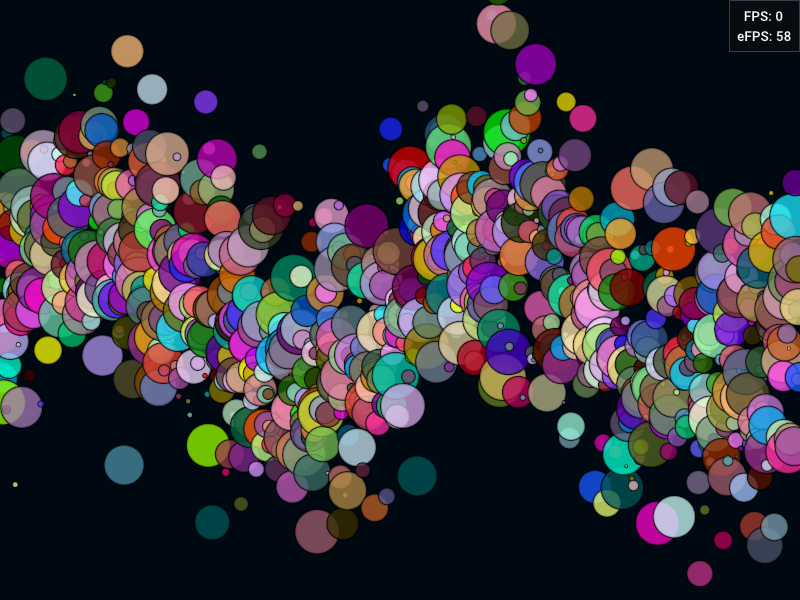
Props¶
| Type | Index | Type | Description |
|---|---|---|---|
pos |
0 | dvec3 |
marker position |
color |
0 | cvec4 |
marker color |
marker_size |
0 | float |
marker size |
marker_type |
0 | char |
marker type |
angle |
0 | char |
marker angle, between 0 (0) and 256 (M_2PI) excluded |
transform |
0 | char |
transform enum |
color |
1 | vec4 |
edge color (uniform) |
line_width |
0 | float |
edge line width (uniform) |
Marker types¶
Note
Marker shapes are computed in real-time in the fragment shader (vector graphics rather than bitmaps). The GLSL code is from Rougier 2014, Antialiased 2D Grid, Marker, and Arrow Shaders.
| Marker | Value | Image |
|---|---|---|
disc |
0 | 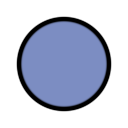 |
asterisk |
1 | |
chevron |
2 | 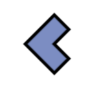 |
clover |
3 | 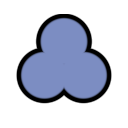 |
club |
4 | 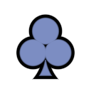 |
cross |
5 | 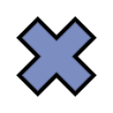 |
diamond |
6 | 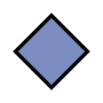 |
arrow |
7 | |
ellipse |
8 | 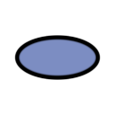 |
hbar |
9 | 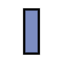 |
heart |
10 | 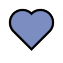 |
infinity |
11 | 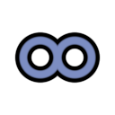 |
pin |
12 | |
ring |
13 | 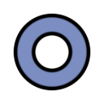 |
spade |
14 | 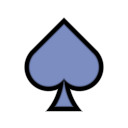 |
square |
15 | 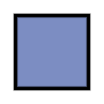 |
tag |
16 | 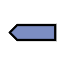 |
triangle |
17 | 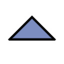 |
vbar |
18 |  |
Path¶
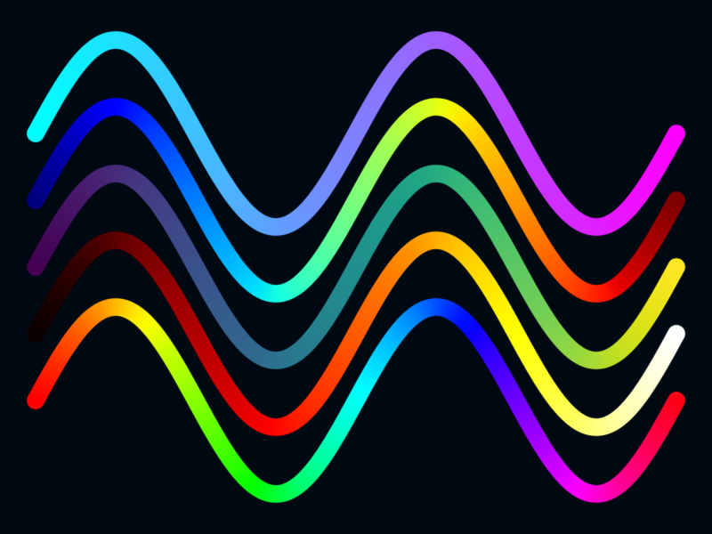
Props¶
| Type | Index | Type | Description |
|---|---|---|---|
pos |
0 | dvec3 |
all path points, concatenated |
length |
0 | uint |
path lengths, one integer per path |
color |
0 | cvec4 |
point colors, one per point |
topology |
0 | DvzPathTopology (int) |
topology of each path (0=open, 1=closed) |
line_width |
0 | float |
line width of all paths (uniform) |
cap_type |
0 | DvzCapType (int) |
cap type (uniform) |
join_type |
0 | DvzJoinType (int) |
join type (uniform) |
Polygon¶
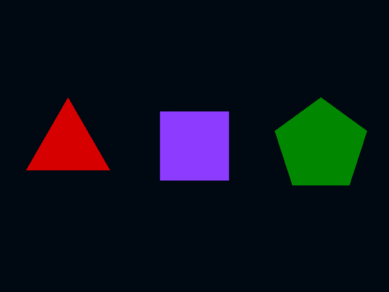
This visual currently only uses a basic triangle underlying graphics. It performs a triangulation of the polygons with the earcut C++ library by mapbox. Several arbitrary-sized polygons can be specified in the same visual.
Props¶
| Type | Index | Type | Description |
|---|---|---|---|
pos |
0 | dvec3 |
all polygon points, concatenated |
length |
0 | uint |
polygon lengths, one integer per polygon |
color |
0 | cvec4 |
polygon colors, one per polygon |
Image¶
Props¶
| Type | Index | Type | Description |
|---|---|---|---|
pos |
0 | dvec3 |
top left position |
pos |
1 | dvec3 |
top right position |
pos |
2 | dvec3 |
bottom right position |
pos |
3 | dvec3 |
bottom left position |
texcoords |
0 | vec3 |
top left texture coordinates |
texcoords |
1 | vec3 |
top right texture coordinates |
texcoords |
2 | vec3 |
bottom right texture coordinates |
texcoords |
3 | vec3 |
bottom left texture coordinates |
Sources¶
| Type | Index | Description |
|---|---|---|
vertex |
0 | vertex buffer |
param |
0 | parameter struct |
image |
0..3 | 2D texture with image #i |
Scalar image with colormap¶
This visual is similar to the image visual, except that it accepts scalar images and colormaps computed on the GPU.
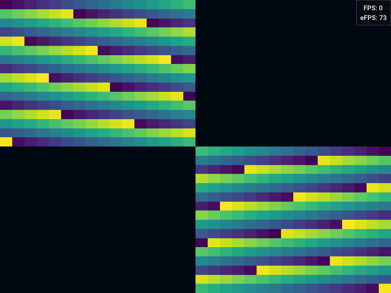
Props¶
| Type | Index | Type | Description |
|---|---|---|---|
pos |
0 | dvec3 |
top left position |
pos |
1 | dvec3 |
top right position |
pos |
2 | dvec3 |
bottom right position |
pos |
3 | dvec3 |
bottom left position |
texcoords |
0 | vec3 |
top left texture coordinates |
texcoords |
1 | vec3 |
top right texture coordinates |
texcoords |
2 | vec3 |
bottom right texture coordinates |
texcoords |
3 | vec3 |
bottom left texture coordinates |
vrange |
0 | vec2 |
colormap range (uniform) |
cmap |
0 | int |
colormap number (uniform) |
Sources¶
| Type | Index | Description |
|---|---|---|
vertex |
0 | vertex buffer |
param |
0 | parameter struct |
color_texture |
0 | colormap texture |
image |
0 | 2D texture with image |
Axes¶
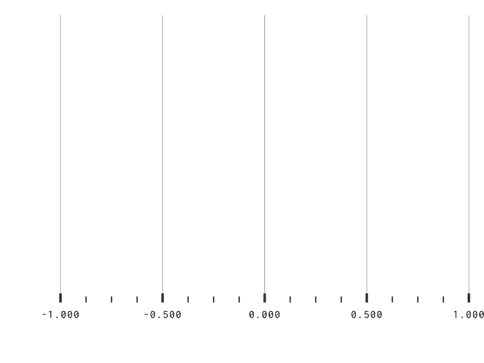 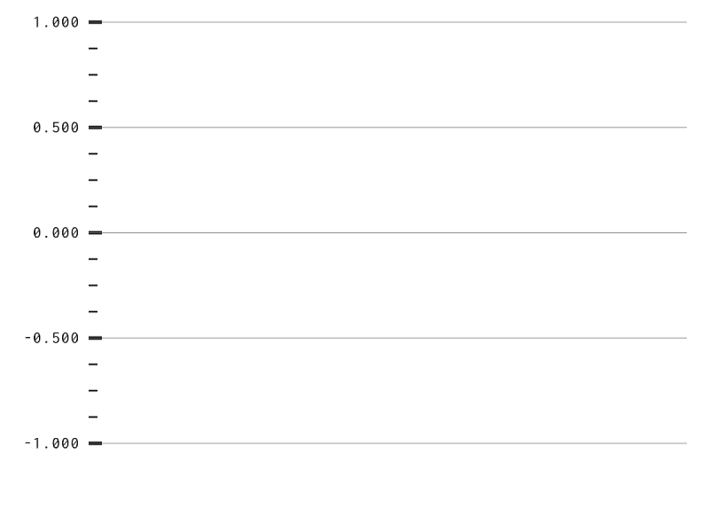
Tick level¶
| Index | Level | Description |
|---|---|---|
| 0 | minor |
minor ticks |
| 1 | major |
major ticks |
| 2 | grid |
grid |
| 3 | lim |
axes delimiters |
Graphics¶
| Index | Graphics | Description |
|---|---|---|
| 0 | segment |
ticks (minor, major, grid, lim) |
| 1 | text |
tick labels |
Props¶
| Type | Index | Type | Graphics | Description |
|---|---|---|---|---|
pos |
any level | double |
segment |
tick positions in data coordinates |
color |
any level | cvec4 |
segment |
tick colors |
line_width |
any level | float |
segment |
tick line width |
length |
minor |
float |
segment |
minor tick length |
length |
major |
float |
segment |
major tick length |
text |
0 | str |
text |
tick labels text |
text_size |
0 | float |
text |
tick labels font size |
Sources¶
| Type | Index | Graphics | Description |
|---|---|---|---|
vertex |
0 | segment |
vertex buffer for ticks |
index |
0 | segment |
index buffer for ticks |
vertex |
1 | text |
vertex buffer for labels |
index |
1 | text |
index buffer for labels |
font_atlas |
0 | text |
font atlas for labels |
3D visuals¶
Mesh¶
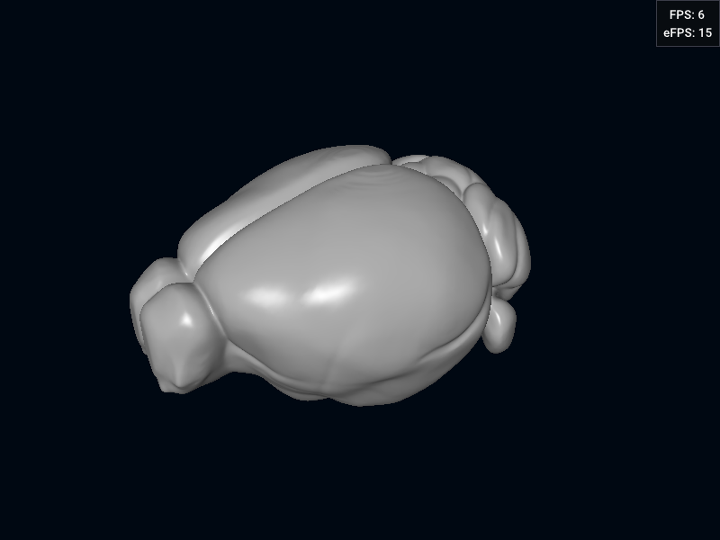
Features:
- Up to four blendable textures
- Up to four lights
- Automatic computation of normals (cross product of face vertices) if the
normalprop is not provided
Props¶
| Type | Index | Type | Description |
|---|---|---|---|
pos |
0 | dvec3 |
vertex position |
normal |
0 | vec3 |
vertex normal |
texcoords |
0 | vec2 |
texture coordinates |
color |
0 | cvec4 |
color as RGB 3-bytes |
alpha |
0 | char |
alpha transparency value |
index |
0 | uint32 |
faces, as vertex indices |
light_pos |
0 | mat4 |
light positions (uniform) |
light_params |
0 | mat4 |
light coefficients (uniform) |
texcoefs |
0 | vec4 |
texture blending coefficients (uniform) |
clip |
0 | vec4 |
clip vector (uniform) |
Warning
The texcoords and color props are mutually exclusive. The color has precedence over the texcoords. The mesh vertex struct has no color field, only a texcoord field. When the color prop is set, special texcoords values are computed (packing 3 bytes into the second texture coordinate floating-point number).
Sources¶
| Type | Index | Description |
|---|---|---|
vertex |
0 | vertex buffer (vertices) |
index |
0 | index buffer (faces) |
param |
0 | parameter struct |
image |
0..3 | 2D texture with image #i |
Basic visuals¶
The basic visuals are simpler and more efficient, but they do not support antialiasing.
Point¶
The point visual is a trimmed-downed version of the marker visual. It is based on the point primitive.
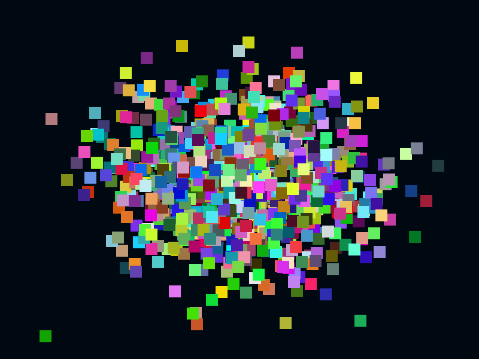
Props¶
| Type | Index | Type | Description |
|---|---|---|---|
pos |
0 | dvec3 |
point position |
color |
0 | cvec4 |
point color |
marker_size |
0 | float |
point size (uniform) |
Line¶
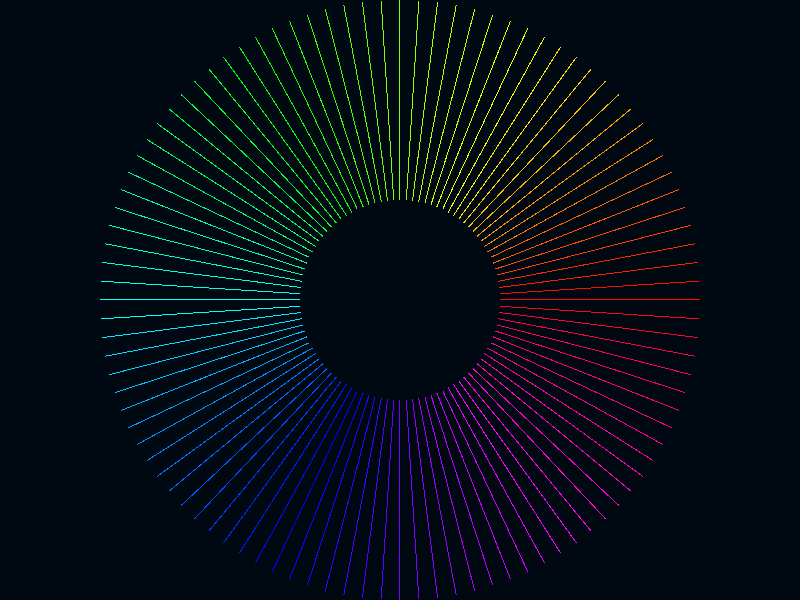
Props¶
| Type | Index | Type | Description |
|---|---|---|---|
pos |
0 | dvec3 |
line start position |
pos |
1 | dvec3 |
line end position |
color |
0 | color |
line color |
Line strip¶
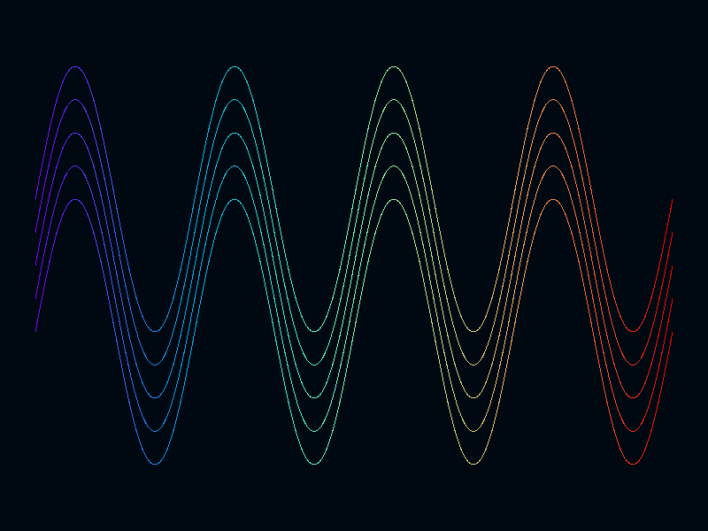
Props¶
| Type | Index | Type | Description |
|---|---|---|---|
pos |
0 | dvec3 |
point position |
color |
0 | cvec4 |
point color |
length |
0 | uint32 |
number of points in each line strip |
Triangle¶
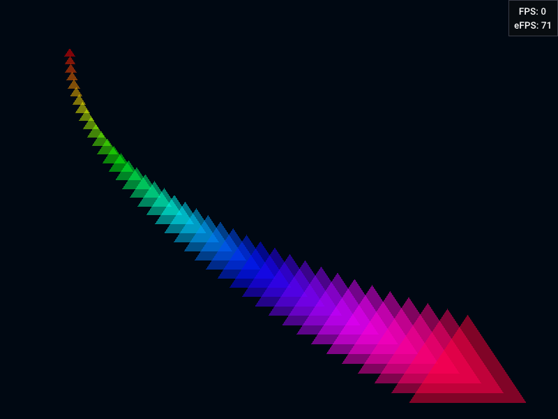
Props¶
| Type | Index | Type | Description |
|---|---|---|---|
pos |
0 | dvec3 |
triangle position 0 |
pos |
1 | dvec3 |
triangle position 1 |
pos |
2 | dvec3 |
triangle position 2 |
color |
0 | color |
triangle color |
Triangle strip¶
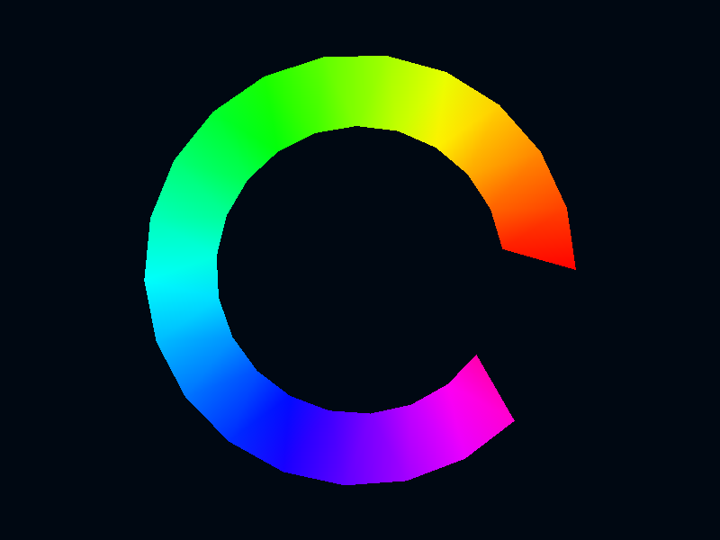
Props¶
| Type | Index | Type | Description |
|---|---|---|---|
pos |
0 | dvec3 |
point position |
color |
0 | color |
point color |
Triangle fan¶
Warning
This visual is not supported on macOS.
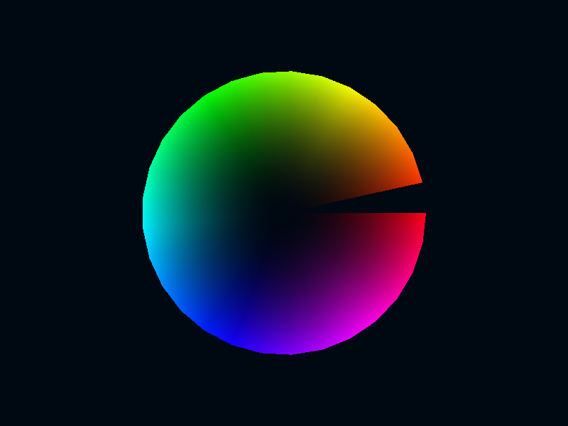
Props¶
| Type | Index | Type | Description |
|---|---|---|---|
pos |
0 | dvec3 |
point position |
color |
0 | color |
point color |
Common data¶
The sources and props below are shared by all builtin visuals.
Common sources¶
| Type | Index | Description |
|---|---|---|
mvp |
0 | DvzMVP structure with model-view-proj matrices |
viewport |
0 | DvzViewport structure with viewport info |
Common props¶
| Type | Index | Type | Source | Description |
|---|---|---|---|---|
model |
0 | mat4 |
mvp |
model transformation matrix |
view |
0 | mat4 |
mvp |
view transformation matrix |
proj |
0 | mat4 |
mvp |
proj transformation matrix |
time |
0 | float |
mvp |
time since app start, in seconds |
Common enums¶
Visual transform¶
Visual clip¶
Data types¶
| Data type | Component size | Type size | Description |
|---|---|---|---|
char |
8 | 8 | 1 byte (unsigned byte) |
cvec2 |
8 | 16 | 2 bytes |
cvec3 |
8 | 24 | 3 bytes |
cvec4 |
8 | 32 | 4 bytes |
ushort |
16 | 16 | 1 unsigned short integer |
usvec2 |
16 | 32 | 2 ushort |
usvec3 |
16 | 48 | 3 ushort |
usvec4 |
16 | 64 | 4 ushort |
short |
16 | 16 | 1 signed short integer |
svec2 |
16 | 32 | 2 short |
svec3 |
16 | 48 | 3 short |
svec4 |
16 | 64 | 4 short |
uint |
32 | 32 | 1 unsigned long integer |
uvec2 |
32 | 64 | 2 uint |
uvec3 |
32 | 96 | 3 uint |
uvec4 |
32 | 128 | 4 uint |
int |
32 | 32 | 1 long integer |
ivec2 |
32 | 64 | 2 int |
ivec3 |
32 | 96 | 3 int |
ivec4 |
32 | 128 | 4 int |
float |
32 | 32 | 1 single-precision floating-point number |
vec2 |
32 | 64 | 2 float |
vec3 |
32 | 96 | 3 float |
vec4 |
32 | 128 | 4 float |
double |
64 | 64 | 1 double-precision floating-point number |
dvec2 |
64 | 128 | 2 double |
dvec3 |
64 | 192 | 3 double |
dvec4 |
64 | 256 | 4 double |
mat2 |
32 | 128 | 2x2 matrix of floats |
mat3 |
32 | 288 | 3x3 matrix of floats |
mat4 |
32 | 512 | 4x4 matrix of floats |
custom |
- | - | used by structured/record arrays (heterogeneous types) |
str |
64 | 64 | pointer to char |
Technical notes¶
- In a given visual, a prop is entirely defined by its type and its index. A visual may have multiple props of the same type. For example, the
segmentvisual has a first propposwith the segment start position, and another with the segment end position. The tables below specify the role of these indices in each case. - A visual source corresponds to a GPU object holding the data for the visual. Common source types include: vertex buffer, index buffer, uniform buffer, texture. In a given visual, a source is entirely defined by its type and its index. Each prop is typically linked to a given source. Most props correspond either to shader attributes, in which case they are associated with the vertex buffer, or to global variables, in which case they are associated with uniform buffers.
- A visual is composed of one or several pipelines: graphics pipelines (or just graphics), and optionally compute pipelines (or just computes). A graphics pipeline corresponds to a vertex shader, a fragment shader, and possibly other shaders. In a given visual, each pipeline is entirely defined by its type (graphics or compute) and its index. The tables below specify the different pipelines when there are several of them in a given visual. For example, the axes visual contains a
segmentgraphics for tick segments, and atextgraphics for tick labels. - Props marked uniform below can only receive a single value. They correspond to struct fields in a uniform buffer, and they are thus shared across all vertices of a given visual.